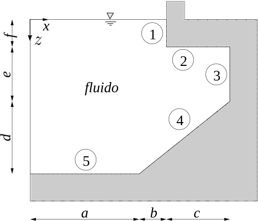

1.8.3. Exercise 1.3#
Si consideri la sezione di diga rappresentata in figura. Si determini il modulo e la direzione del risultante delle forze per unità di apertura agente sui diversi tratti rettilinei della diga stessa sapendo che la pressione atmosferica é di \(1.01 \times 10^5\ Pa\). Dimensioni: \(a=10\ m\), \(b=2\, m\), \(c=8\ m\), \(d=10\ m\), \(e=5\ m\), \(f=3\ m\).
(\(\mathbf{R}_1=347100\hat{\mathbf{x}}\ N/m\), \(\ \mathbf{R}_2=- 1043200\hat{\mathbf{z}}\ N/m\), \(\ \mathbf{R}_3=774500\hat{\mathbf{x}}\ N/m\), \(\ \mathbf{R}_4=2284000 N/m \mathbf{\hat{x}} + 2284000 N/m \mathbf{\hat{z}}\), \(\ \mathbf{R}_5=2774000\hat{\mathbf{z}}\ N/m\).)

Concetti. Legge di Stevino, \(P_1 + \rho g h_1 = P_2 + \rho g h_2\). Calcolo della risultante delle azioni statiche, data la distribuzione di pressione e la normale \(\mathbf{\hat{n}}\) uscente dal volume fluido, $\(\mathbf{R} = \int_{S} P \mathbf{\hat{n}} \ .\)$
Svolgimento. Si risolve il problema bidimensionale, al quale «manca» la dimensione perpendicolare al piano del disegno. La risultante per unità di apertura agente sul lato \(\ell\) (unità di misura nel SI, \(N/m\)) sarà quindi il risultato dell’integrale di linea
Per ogni lato si calcola la distribuzione di pressione, grazie alla legge di Stevino. Si integra la distribuzione di pressione per ottenere il modulo della risultante; la direzione coincide con quella della normale (uscente dal volume occupato dal fluido). Per lo svolgimento, è stato scelto il sistema di riferimento rappresentato in figura, con l’asse x diretto verso destra e l’asse z verso il basso.
Lato 1. Pressione lineare in z, \(P(z) = P_O + \rho g z , \ z \in [0,f]\). Risultante
\[\mathbf{R}_1 = \int_{\ell_1} P \mathbf{\hat{n}} = \int_{0}^{f} (P_O + \rho g z) \mathbf{\hat{x}} dz = \displaystyle\left(P_O f + \frac{1}{2} \rho g f^2 \right) \mathbf{\hat{x}} = 347100 N/m \mathbf{\hat{x}}\]Lato 2. Pressione costante, \(P = P_O + \rho g f\). Risultante
\[\mathbf{R}_2 = \int_{\ell_2} P \mathbf{\hat{n}} = P\cdot c (-\mathbf{\hat{z}})=(P_O + \rho g f)\cdot c(-\mathbf{\hat{z}}) = - 1043200 N/m \mathbf{\hat{z}}\]Lato 3. Pressione lineare in z, \(P(z) = P_O + \rho g z , \ z \in [f,f+e]\). Risultante
\[\mathbf{R}_3 = \int_{\ell_3} P \mathbf{\hat{n}} = \int_{f}^{f+e} (P_O + \rho g z) \mathbf{\hat{x}} dz = \displaystyle\left(P_O e + \frac{1}{2} \rho g \left[(f+e)^2 - f^2\right]\right) \mathbf{\hat{x}} = 774500 N/m \mathbf{\hat{x}}\]Lato 4. Pressione lineare in z, \(P(z) = P_O + \rho g z , \ z \in [f+e,f+e+d]\). Poichè il tratto di parete è rettilineo, il vettore normale è costante e può essere portato fuori dall’integrale. Si calcola prima il modulo della risultante e poi lo si moltiplica per il versore normale. Il modulo della risultante vale
\[\begin{split}\begin{aligned} {R}_4 & = \int_{\ell_4} P d\ell = \int_{f+e}^{f+e+d} P(z) \frac{\sqrt{(b+c)^2+d^2}}{d} dz = \qquad \qquad \text{$\displaystyle\left(d\ell = \frac{\sqrt{(b+c)^2+d^2}}{d} dz \right)$} \\ & = \int_{f+e}^{f+e+d} (P_O + \rho g z) \frac{\sqrt{(b+c)^2+d^2}}{d} dz = \\ & = \frac{\sqrt{(b+c)^2+d^2}}{d}\left[ P_O d + \frac{1}{2} \rho g \left((f+e+d)^2-(f+e)^2 \right) \right] = \sqrt{2} \cdot 2284000 N/m \\ \end{aligned}\end{split}\]La forza può essere scritta come \(\mathbf{R}_4 = R_4 \mathbf{\hat{n}}_4\), con \(\mathbf{\hat{n}}_4 = 1/\sqrt{2} \ \hat{\mathbf{x}} + 1/\sqrt{2} \ \hat{\mathbf{z}}\). Proietttando \(\mathbf{R}_4\) lungo gli assi si ottengono le componenti orizzontali e verticali
\[\mathbf{R}_4 = 2284000 N/m \mathbf{\hat{x}} + 2284000 N/m \mathbf{\hat{z}}\]Lato 5. Pressione costante, \(P = P_O + \rho g (f+e+d)\). Risultante
\[\mathbf{R}_5 = P\cdot a \mathbf{\hat{z}} =(P_O + \rho g (f+e+d))\cdot a \mathbf{\hat{z}} = 2774000 N/m \mathbf{\hat{z}}\]